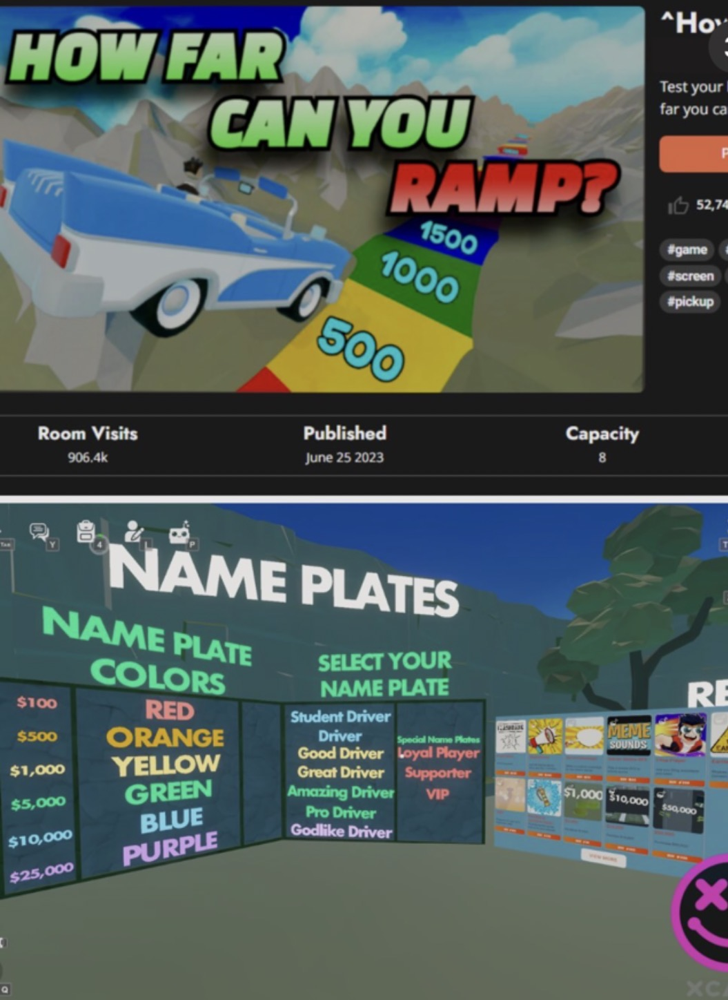

Game design case studies
These case studies explain what I built, why I made specific design choices and what I would test next. Proposed tests are clearly separated from completed work.
How Far Can You Ramp?

Player goal and loop
The main action is simple: launch a vehicle and see how far it travels. The next decision is just as important. Distance converts into currency, currency buys more launch power, and the new result gives the player a visible reason to try again. Once Ramp Speed is maxed, rebirth creates a longer-term progression decision.
Implemented
I implemented distance-based rewards, speed upgrades, customization, randomized Golden Egg Gold rewards, limited-use abilities, lifetime statistics and rebirth. The launch system also uses player-controlled launch force and vehicle persistence rules. Rebirth grants a permanent +1 landing earnings multiplier while resetting currency and upgrades; a confirmation step makes that tradeoff explicit before the player commits.
Challenge and response
The spawn area needs to be a reliable starting point, but moving vehicles could interfere with players entering the game. I implemented a restricted area trigger to handle entry into the spawn safety zone and display an out of bounds message. The goal was to reduce disruption when players started a run. I have not measured the effect on retention.
Another iteration: keeping vehicles available
Observed bug: Some vehicles failed to return after launching, reducing the number available for other players. This broke the repeatable launch loop because players could not reliably start another run.
Constraint: Returning every vehicle on a timer would interrupt players who were still seated.
Implemented fix: I used a timed trigger-volume check to identify vehicles and inspect seat occupancy. Only unoccupied vehicles were returned to spawn.
Verification: I tested the fix with players in an active session, moved the working logic to the main server, and played for hours without observing the issue again. This is a description of the testing I performed, not a guarantee of zero remaining bugs.
Tradeoff
Guaranteed speed upgrades promise steady progress; randomized rewards offer surprise. Both can be motivating, but only if the player can distinguish a dependable purchase from a chance-based outcome. Rebirth adds a separate tradeoff between current power and future earning potential.
What I would test next
I would watch first-time players and record whether they understand how distance becomes currency, how quickly they reach the first meaningful upgrade and whether rebirth feels worth the reset. I would compare cost curves and reward probabilities only after establishing that baseline.
Sticker Puzzles: Match Scenes
Player goal
Recognize matching sticker targets and complete a scene on a touchscreen.
Implemented
I implemented matching, near-target snapping, hints and puzzle completion. When a sticker is released near its valid destination, it snaps into place instead of demanding pixel-perfect finger positioning.
Design reasoning
The original free movement made placement feel unnecessarily difficult. I wanted players to solve the visual matching problem, not wrestle with the touchscreen. Snapping reduces input friction while preserving the actual puzzle: the sticker still needs the correct target. Too much tolerance would make placement feel automatic; too little would make correct answers feel wrong.
What I would test next
I would compare error rates and completion times across snap tolerances, then watch whether players request hints because the puzzle is difficult or because placement feedback is unclear. Those tests have not yet been run.
Sugar.io
Player goal
Grow a tornado in an arena while navigating opponents and environmental objects.
Implemented prototype scope
I built a controllable tornado that grows, interacts with destructible objects and fights AI opponents. This is a prototype, not a released title.
Design challenge
Growth should change the player's choices, not just the tornado's scale. Small objects need to read as early opportunities, larger threats as future goals, and AI opponents as risks the player can assess. Clear size and damage feedback will be important as the prototype develops.
What I would test next
I would test whether players can predict what they can consume, recognize when an opponent is dangerous and notice when growth unlocks a new strategy. These are open design questions, not measured outcomes.
Big Hands
Player goal
Navigate multiplayer VR interactions involving giant hands, grabbing and escape.
My implemented contribution
I designed and implemented the player-facing logic for grabbing, escape, multiplayer interactions and respawning. My collaborator was responsible for the environment assets.
Design consideration
Being grabbed by another player creates instant drama, but it also removes some control. The escape rules need to feel discoverable, and respawn behavior needs to make recovery predictable. The design challenge is balancing chaos with a player's sense of agency.
What I would test next
I would observe first-time players to see whether they discover the escape interaction without explanation, understand when a grab has ended and know what to do after respawning. This is a proposed usability test.